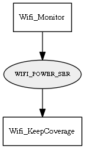

Global overview
All modules
All variables
All commands
Mission files
Pipelines
Variable: WIFI_POWER_SER
Variable info:
Variable name
Short description
Who publishes it?
Who subscribes to it?
WIFI_POWER_SER
The last Wifi measurements as a MRPT CObservationWirelessPower observation
Wifi_Monitor
Wifi_KeepCoverage
Variable graph:

Detailed description:
The last Wifi measurements as a MRPT CObservationWirelessPower observation
Page generated by
Mooxygen 1.1.0
at Thu Jan 22 11:30:21 2015